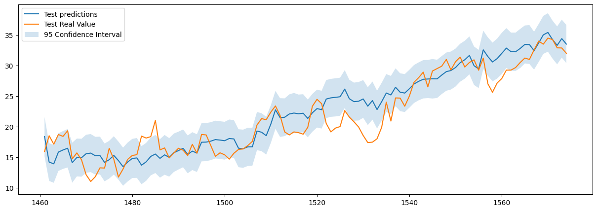
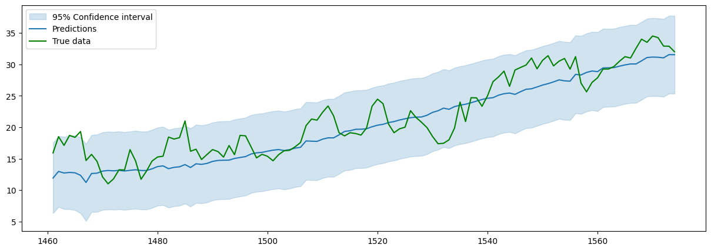
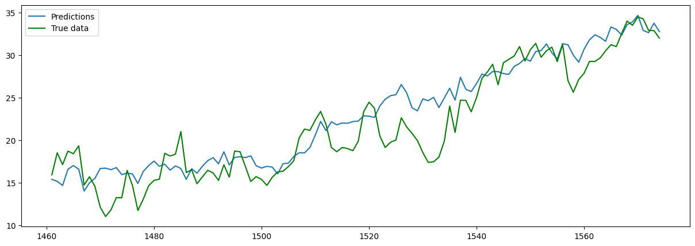

Daily Climate Time Series — Delhi Temperature Forecasting
Comparative study of Gaussian Processes and XGBoost for daily mean temperature prediction using meteorological covariates
Project Overview
This project focuses on forecasting the daily mean temperature in Delhi using four years of historical climate records (2013–2017). The dataset provides daily measurements of mean temperature, humidity, wind speed, and atmospheric pressure.
The goal was to design and compare several regression pipelines capable of capturing the strong seasonal structure of the data while leveraging meteorological covariates to improve residual accuracy. The primary evaluation metric is Root Mean Squared Error (RMSE) on a held-out test set.
Dataset
The Daily Delhi Climate dataset contains daily observations collected from 2013 to 2017. The target variable is meantemp (°C), and the available features are:
- humidity — daily mean relative humidity (%)
- wind_speed — daily mean wind speed (km/h)
- meanpressure — daily mean atmospheric pressure (hPa)
- date — converted to a numeric day index to encode temporal structure
The dataset contains no missing values. However, meanpressure exhibits extreme outliers (values reaching 7 679 hPa against a typical range around 1 011–1 014 hPa). These were handled by clipping at empirical 1% and 99% quantiles.
Technical Approach
1. Preprocessing & Feature Engineering
- Outlier clipping on
meanpressureusing quantile thresholds, which significantly improved its correlation with the target. - Standard scaling of continuous features before model training.
- Fourier features — sine and cosine terms at multiple periods (up to 2 years) to explicitly encode seasonality.
2. Gaussian Process Regression (GPR)
The first family of models leverages Gaussian Processes with carefully engineered kernels:
- Additive decomposition \( T(t,w,p,h) = f(t) + g(w,p,h) \): a temporal GP captures seasonal trends, and a second GP models residuals using the meteorological covariates.
- The temporal component uses an ExpSineSquared kernel (periodicity fixed to 365 days) combined with a RationalQuadratic kernel for medium-range irregularities, plus a WhiteKernel for noise.
- GPR provides not only point predictions but also calibrated 95% confidence intervals, giving a direct measure of predictive uncertainty.
3. Fourier Regression + XGBoost
The second family combines a linear Fourier regression with gradient boosting:
- A linear regression on Fourier features captures the main seasonal trend.
- An XGBoost model with hyperparameter tuning via
RandomizedSearchCVand time-series cross-validation (TimeSeriesSplit, 5 folds) fits the residuals. - Hyperparameters searched: number of estimators, learning rate, max depth, min child weight, subsample ratio.
4. Fourier Regression + Gaussian Process on Residuals
A hybrid variant replaces XGBoost with a GP on the residuals of the Fourier regression, using an RBF kernel combination. This approach achieves the best RMSE but suffers from a high normalised prediction error, indicating the uncertainty estimates are poorly calibrated.

Key Results
Best RMSE (°C)
Fourier Regression + GP on residuals — best point accuracy
XGBoost Only RMSE (°C)
Full XGBoost on Fourier-augmented features — best scalable approach
Pure GPR RMSE (°C)
Additive GP decomposition with calibrated confidence intervals

Model Comparison
| Model | Test RMSE (°C) | Uncertainty Estimates | Training Cost |
|---|---|---|---|
| Additive GP (time + covariates) | 2.83 | Yes — calibrated | High |
| Fourier + XGBoost (residuals) | 3.51 | No | Low |
| Fourier + GP (residuals) | 2.65 | Yes — overconfident | High |
| XGBoost on Fourier features | 2.67 | No | Low |

Key Takeaways
- Proper preprocessing matters: clipping pressure outliers visibly improved its correlation with the target temperature and benefited downstream models.
- Fourier features are a powerful baseline for data with well-defined seasonality: encoding the 365-day period as sine/cosine terms substantially reduces the task for the residual model.
- XGBoost vs. Gaussian Processes: despite initial expectations, XGBoost with Fourier augmentation matches the accuracy of GP-based approaches at a fraction of the computational cost.
- Uncertainty quantification: GPs remain attractive when calibrated confidence intervals are needed. However, residual GP models can be overconfident — the high normalised prediction error signals that the model underestimates its own errors.
- Future direction: a promising extension would be to feed GP predictions or uncertainty estimates as features into XGBoost, combining probabilistic modelling with gradient boosting scalability.